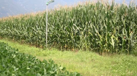
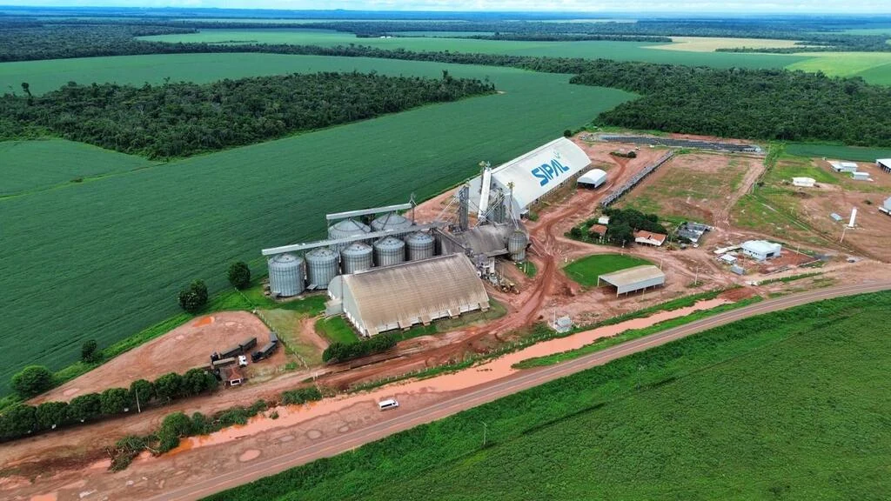
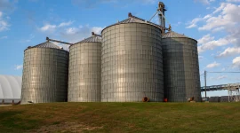
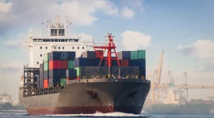
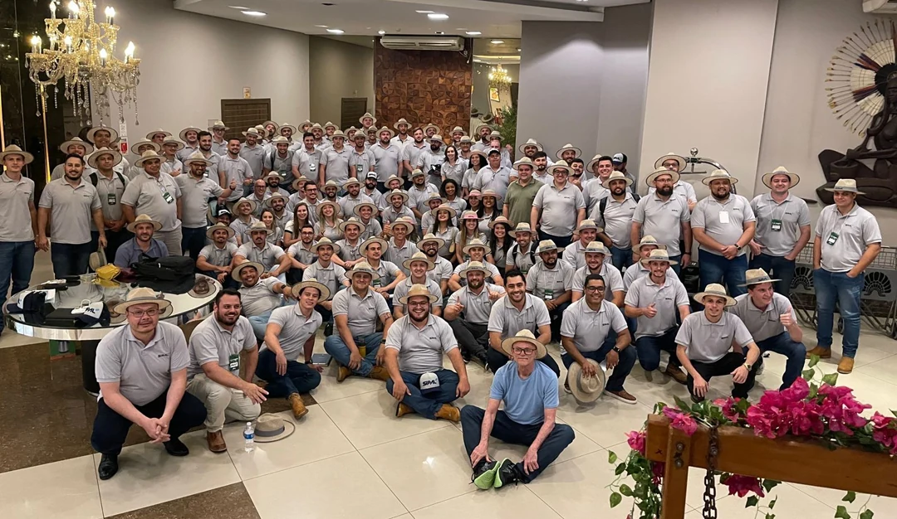
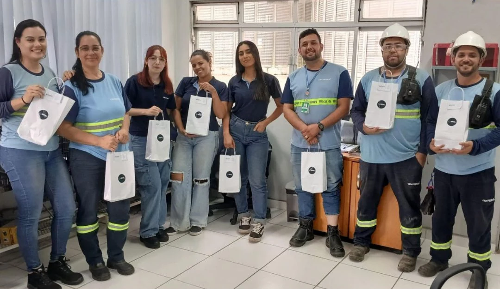

NA ORIGEM DE TUDOO começo de cada safra.
Soja, milho e cana-de-açúcar. Nossa atuação começa na terra, com o cultivo em nossas fazendas.
Fale com a Sipal
SIPAL AGRONEGÓCIO
Há mais de 50 anos, conectamos a força do agronegócio brasileiro a novos mercados.
Conheça nossa atuaçãoESSA É A SIPAL
Somos um grupo brasileiro com raízes no agronegócio e presença em diferentes setores da economia.
Com sede em Curitiba, reunimos produção agrícola, armazenagem e operações portuárias. Uma trajetória construída com trabalho e relações de confiança.
Conheça nossa históriaDedicação em cada etapa.
Respeito e disposição para aprender.
Responsabilidade no uso dos recursos.
NOSSOS NEGÓCIOS
Conheça as frentes de atuação
que fazem parte da nossa história.
Diferentes negócios.
O mesmo compromisso de crescer juntos.

NA ORIGEM DE TUDOSoja, milho e cana-de-açúcar. Nossa atuação começa na terra, com o cultivo em nossas fazendas.
Fale com a Sipal
ESTRUTURA PARA A COLHEITASilos para os grãos das nossas fazendas e para a produção de agricultores locais.
Converse com a Sipal
CONEXÃO COM NOVOS MERCADOSOperações no Porto de Paranaguá conectam a produção brasileira ao mercado internacional.
Entre em contato
UMA ATUAÇÃO QUE VAI ALÉMEtanol, máquinas agrícolas, veículos, implementos rodoviários e shopping center também integram a trajetória do grupo.
Explore o grupo
#VEMSERSIPALPESSOAS E CARREIRAS
Mais de 4 mil pessoas fazem parte da Sipal.
O próximo capítulo também pode ser seu.
FALE COM A SIPAL
Para falar sobre a Sipal e nossos negócios,
entre em contato pelo canal institucional.